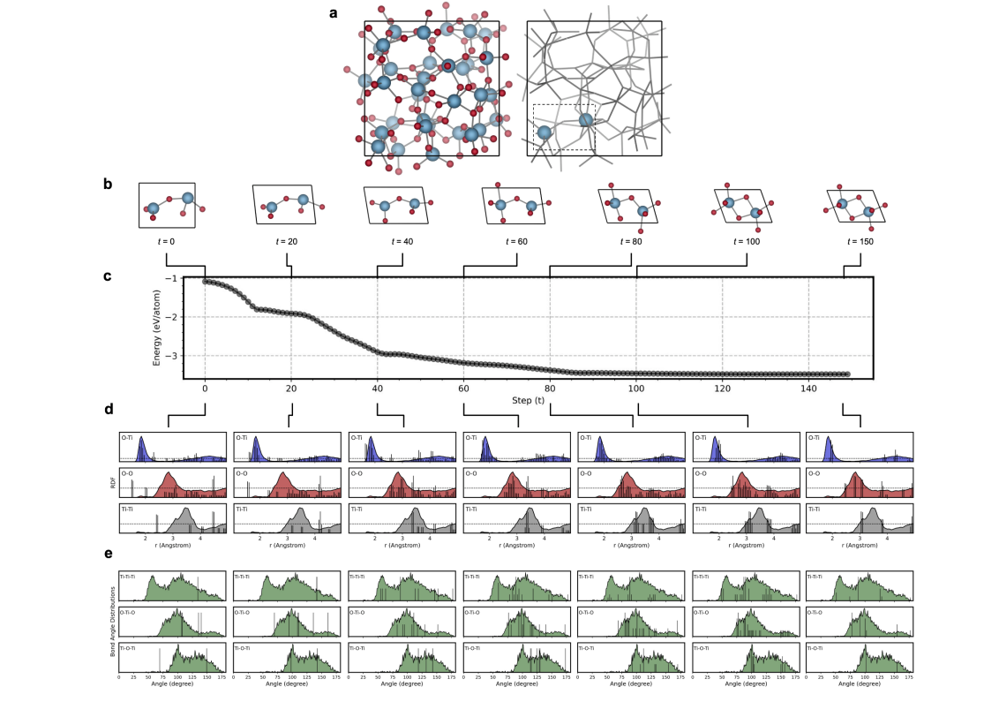
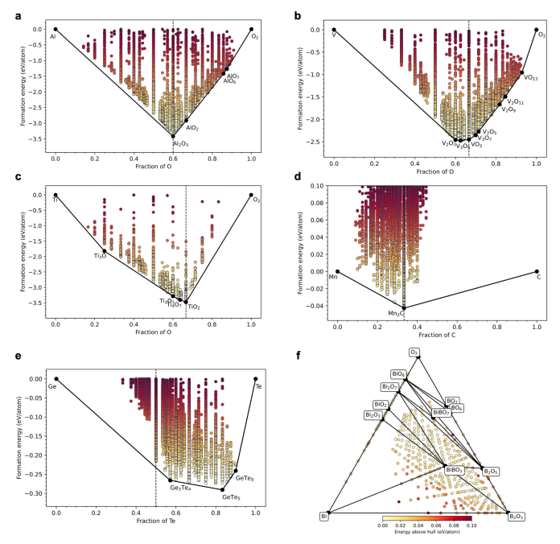

所感
個人的に気になる論文をピックアップして紹介していきます。定期的に更新します。
論文タイトル一覧
深層学習による非晶質物質から結晶への相転移の予測
非晶質物質の局所的な構造モチーフの結晶化経路を原子レベルでサンプリングすることで、任意の無機化学系における非晶質物質から結晶への相転移の結果を予測できることを示した。
汎用的な深層学習ポテンシャルを用いて、多様な材料系（多形性を持つ酸化物、窒化物、炭化物、フッ化物、塩化物、カルコゲナイド、金属合金など）において、非晶質前駆体から最初に核生成する多形体の結晶構造を高い精度で特定できることを示した。
オストワルトの段階則を分子レベルで機械的に利用することで、非晶質相から新たな過冷却結晶へと確実に到達できることを示した。
非晶質相から特定の多形体への変換は、局所的なモチーフが幾何学的に導く連続的でエネルギー的に下降する経路に沿って行われることを原子レベルで追跡し、解明した。
非晶質相の形態や局所的な秩序度を制御することで、多形体選択や多相結晶化のメカニズムを理解し、予測することができることを示した。
【コメント】アモから結晶化させる時に準安定相つくれないか気になっていたので、変態過程の制御で物性変わったりしたら面白い！
【用語】非晶質物質（amorphous matter）：長距離的な周期的な配列や対称性を持たないが、短距離的な秩序は存在する物質。ガラスや金属ガラスなどが例である。深層学習ポテンシャル（deep learning potential）：深層ニューラルネットワークやグラフニューラルネットワークなどの深層学習技術を用いて、原子間相互作用やエネルギー表面を表現するポテンシャル。大規模な第一原理計算のデータセットから学習し、高速かつ高精度に分子動力学シミュレーションを行うことができる。オストワルトの段階則（Ostwald’s rule of stages）：非晶質物質が結晶化する際に、最も安定な結晶ではなく、最も不安定な結晶が最初に出現するという経験則。非晶質物質と最初に出現する結晶との間には局所的な構造的な類似性があると考えられる。
【方法】まず、非晶質物質の原子モデルを作成するために、溶融・急冷分子動力学（MQMD）法を用いました。この方法では、目的の化学組成と密度に応じて、ランダムに配置された原子を高温で平衡させた後、低温で急冷し、平衡させることで、短距離秩序を発達させた非晶質構造を得ることができます。次に、非晶質物質から結晶への相転移を予測するために、非晶質物質の局所的な構造モチーフをサンプリングし、周期境界条件のもとで幾何学的に最適化することで、結晶化経路を探索しました。この方法では、非晶質物質から直接アクセス可能な最低エネルギーの結晶構造が得られることが期待されます。この相転移予測の過程では、深層学習ポテンシャルを用いて原子間相互作用を記述しました。このポテンシャルは、汎用的で化学的に普遍的なグラフニューラルネットワーク（GNN）ベースのポテンシャルであり、数百万個の第一原理計算データセットから学習されたものです。このポテンシャルは、非晶質物質や結晶物質を含む様々な材料系に対して高い精度と速度を提供することができます。この手法論は、任意の無機化学系における非晶質物質から結晶への相転移の予測に適用可能であり、多形性や多相性を持つ多様な材料系において実験的に観察された最初の核生成多形体の結晶構造を正確に特定することができました。これは、オストワルトの段階則が分子レベルで機械的に利用されていることを示しており、非晶質相から新たな過冷却結晶へ確実に到達することが可能であることを示しています。また、原子レベルで非晶質物質から特定の多形体への変換過程を追跡し、解明しました。その結果、局所的なモチーフが幾何学的に導く連続的でエネルギー的に下降する経路に沿って行われることが明らかになりました。
【新規性】深層学習を用いて、結晶構造の三次元画像から結晶化可能性を予測するという新しい手法を提案した。これは、結晶構造と化学組成の両方の情報を同時に考慮することができる。結晶化可能性の予測において、教師あり学習と教師なし学習の両方のアプローチを比較し、それぞれの長所と短所を明らかにした。教師あり学習は分類精度が高いが、教師なし学習は汎化性能が高いことが分かった。結晶化可能性の予測において、エネルギー的な安定性だけでなく、構造的・化学的なパターンも重要な要素であることを示した。エネルギー的に低いが結晶化不可能な構造や、エネルギー的に高いが結晶化可能な構造も存在することが分かった。結晶化可能性の予測を、電池電極材料や熱電材料などの応用例に適用し、有望な候補材料を探索することができることを示した。また、モリブデンジサルファイドの異なる多形体についても、結晶化可能性の予測を行った。結晶化可能性をAshbyチャートのように他の物性値と比較することで、材料選択や設計に役立つ情報を提供することができることを示した。結晶化可能性は材料開発における重要な制約条件であることが分かった。
【用語】非晶質物質（amorphous matter）：長距離的な周期的な配列や対称性を持たないが、短距離的な秩序は存在する物質。ガラスや金属ガラスなどが例である。深層学習ポテンシャル（deep learning potential）：深層ニューラルネットワークやグラフニューラルネットワークなどの深層学習技術を用いて、原子間相互作用やエネルギー表面を表現するポテンシャル。大規模な第一原理計算のデータセットから学習し、高速かつ高精度に分子動力学シミュレーションを行うことができる。オストワルトの段階則（Ostwald’s rule of stages）：非晶質物質が結晶化する際に、最も安定な結晶ではなく、最も不安定な結晶が最初に出現するという経験則。非晶質物質と最初に出現する結晶との間には局所的な構造的な類似性があると考えられる。
【方法】まず、非晶質物質の原子モデルを作成するために、溶融・急冷分子動力学（MQMD）法を用いました。この方法では、目的の化学組成と密度に応じて、ランダムに配置された原子を高温で平衡させた後、低温で急冷し、平衡させることで、短距離秩序を発達させた非晶質構造を得ることができます。次に、非晶質物質から結晶への相転移を予測するために、非晶質物質の局所的な構造モチーフをサンプリングし、周期境界条件のもとで幾何学的に最適化することで、結晶化経路を探索しました。この方法では、非晶質物質から直接アクセス可能な最低エネルギーの結晶構造が得られることが期待されます。この相転移予測の過程では、深層学習ポテンシャルを用いて原子間相互作用を記述しました。このポテンシャルは、汎用的で化学的に普遍的なグラフニューラルネットワーク（GNN）ベースのポテンシャルであり、数百万個の第一原理計算データセットから学習されたものです。このポテンシャルは、非晶質物質や結晶物質を含む様々な材料系に対して高い精度と速度を提供することができます。この手法論は、任意の無機化学系における非晶質物質から結晶への相転移の予測に適用可能であり、多形性や多相性を持つ多様な材料系において実験的に観察された最初の核生成多形体の結晶構造を正確に特定することができました。これは、オストワルトの段階則が分子レベルで機械的に利用されていることを示しており、非晶質相から新たな過冷却結晶へ確実に到達することが可能であることを示しています。また、原子レベルで非晶質物質から特定の多形体への変換過程を追跡し、解明しました。その結果、局所的なモチーフが幾何学的に導く連続的でエネルギー的に下降する経路に沿って行われることが明らかになりました。
【新規性】深層学習を用いて、結晶構造の三次元画像から結晶化可能性を予測するという新しい手法を提案した。これは、結晶構造と化学組成の両方の情報を同時に考慮することができる。結晶化可能性の予測において、教師あり学習と教師なし学習の両方のアプローチを比較し、それぞれの長所と短所を明らかにした。教師あり学習は分類精度が高いが、教師なし学習は汎化性能が高いことが分かった。結晶化可能性の予測において、エネルギー的な安定性だけでなく、構造的・化学的なパターンも重要な要素であることを示した。エネルギー的に低いが結晶化不可能な構造や、エネルギー的に高いが結晶化可能な構造も存在することが分かった。結晶化可能性の予測を、電池電極材料や熱電材料などの応用例に適用し、有望な候補材料を探索することができることを示した。また、モリブデンジサルファイドの異なる多形体についても、結晶化可能性の予測を行った。結晶化可能性をAshbyチャートのように他の物性値と比較することで、材料選択や設計に役立つ情報を提供することができることを示した。結晶化可能性は材料開発における重要な制約条件であることが分かった。
2023-10-2
Predicting emergence of crystals from amorphous matter with deep learning
Muratahan Aykol et al. (Google DeepMind, USA)
Nature Communications 14, 5424 (2023)
Predicting emergence of crystals from amorphous matter with deep learning
Muratahan Aykol et al. (Google DeepMind, USA)
Nature Communications 14, 5424 (2023)

